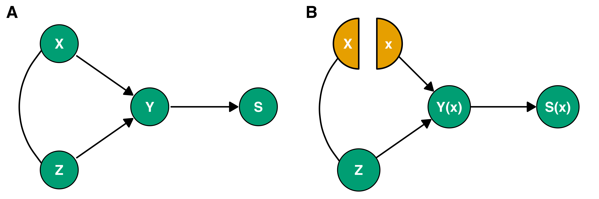
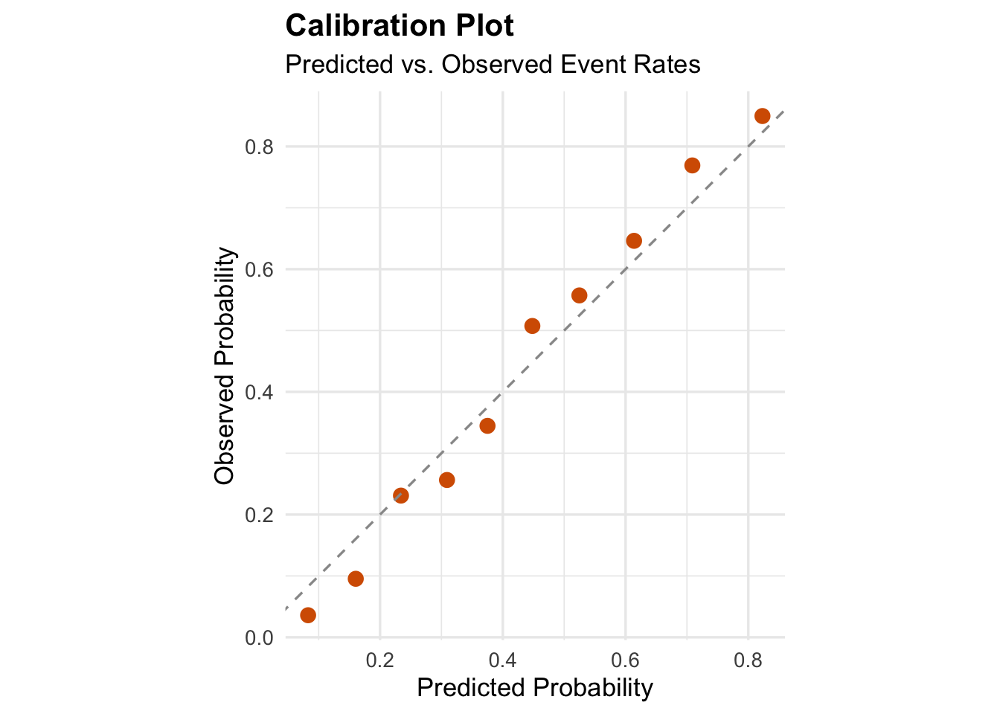
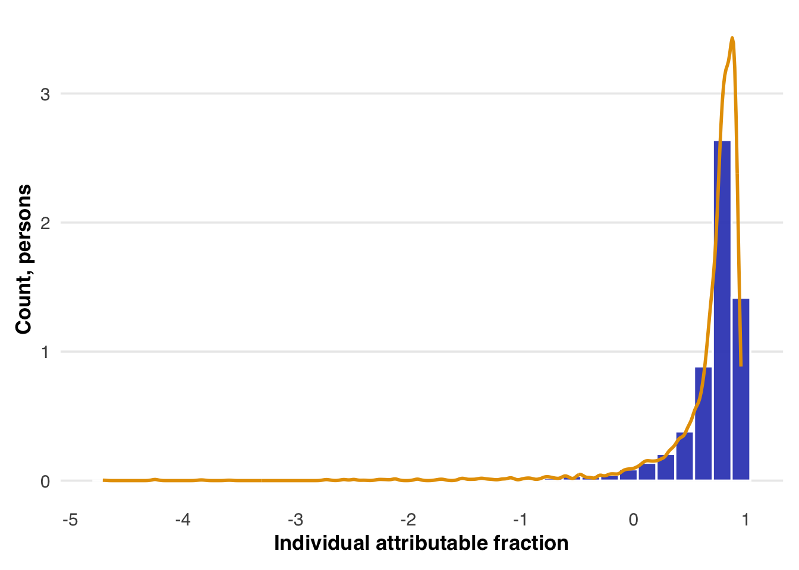
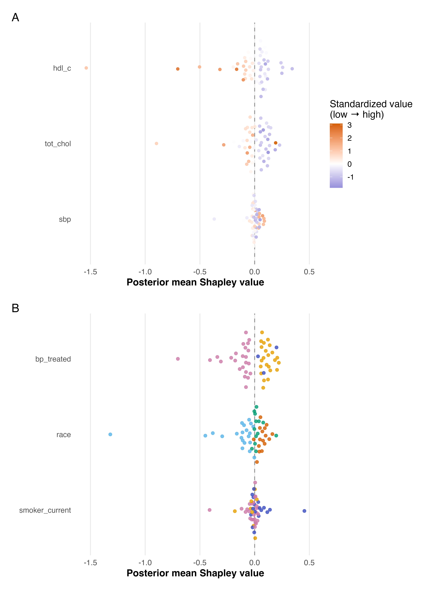

# Load necessities
source("R/imports.R")Causal inference / SEED
Introduction
This workbook outlines our approach to estimating how early-life factors may influence the likelihood of autism using data from the Study to Explore Early Development (SEED). Each factor is analyzed individually while adjusting for a consistent set of other early-life variables, including the other predictors of interest, that could confound its relationship with autism. For example, when studying the effect of preterm birth, we also adjust for maternal hypertension, smoking, and other perinatal factors that might affect both preterm birth and the likelihood of autism. This consistency ensures that each effect is estimated under the same causal framework, making comparisons across predictors meaningful.
Our objective is to estimate causal contrasts: what would happen, on average, if a given early-life variable were set to one value rather than another value. We define two main contrasts: The individual likelihood ratio describes how the likelihood of autism would change for individuals with covariate profile \(Z\) if their predictor were set to \(x\) instead of \(x'\). The population likelihood ratio describes how the overall likelihood of autism in the population would change if everyone’s predictor were set to \(x\) instead of \(x'\).
To make such statements, we rely on a structural model that encodes how variables are generated and sampled in SEED (see Figure below). Because SEED is a case–control study, which oversamples autism cases, we include a sampling indicator \(S\) to distinguish the sampled population from the target population. Our causal targets are defined in the population, not merely within the sampled population.

A technical appendix details the strong assumptions required to interpret these results causally. Chief among them is no unmeasured confounding: after conditioning on the observed covariates \(Z\), the predictor \(X\) can be treated as if randomly assigned. Correct specification of the relationship among \(Y\), \(X\), and \(Z\) is also essential. Even with the right controls, a misspecified model can produce a biased estimand. To mitigate this risk, we use Bayesian Additive Regression Trees (BART), which flexibly captures nonlinearities and interactions while avoiding the overfitting that can occur with highly adaptive methods. BART’s balance between flexibility and regularization makes it a strong first pass for causal inference.
After estimating causal contrasts with BART, we also define attributable fractions that summarize how the overall likelihood of autism would change under joint shifts in all the predictors. The individual attributable fraction describes, for everyone with covariate profile \(Z\), how the observed likelihood of autism would change if all predictors were set to a common reference or minimum-risk level. The population attributable fraction applies the same idea to the entire population, comparing the observed likelihood of autism to the likelihood under a scenario in which everyone’s predictors are set to those reference or minimum-risk levels. The technical appendix describes how to translate the conditional attributable fraction to the population-level version.
Because our analysis includes many predictors that are correlated and may interact, it is difficult to interpret what a joint shift in all predictors implies for any single variable. To address this, we use Shapley decomposition to express each person’s attributable fraction as the sum of contributions from individual predictors. From these individual contributions, we recover similar summaries at the population level, allowing the population attributable fraction to be expressed in terms of predictor-specific contributions as well.
Configuration
We begin by setting up the analysis environment. The first line sources an external R script, R/imports.R, which loads all necessary libraries and helper functions used throughout the notebook.
Next, we load a configuration file, config_1.yaml, written in YAML format. This file specifies key details of the analysis, including where the raw data are located, which variables are treated as predictors, which are included as covariates, and how the outcome variable is defined. It also lists variables for which missingness indicators should be created and any modeling options or paths relevant to downstream steps. The configuration serves as a single source of truth for the analysis; editing it allows us to rerun the entire pipeline without changing the R code.
# Load configuration
config <- yaml::read_yaml("config_1.yaml")Once the configuration is loaded, the dataset specified in the data_file field is read into R.
# Load data
raw_df <- readr::read_csv(config$data_file)From the configuration, we then extract the variables that will enter the analysis: predictors, covariates, and the outcome. The predictors correspond to early-life factors for which we will estimate causal effects, the covariates are variables used to adjust for potential confounding, and the outcome defines the binary or continuous response of interest. These details are summarized in a table below to confirm that the configuration has been read correctly.
#
# Extract predictor names and types
predictors_df <- do.call(rbind, lapply(config$predictors, as.data.frame))
predictors_df$category <- "Predictor"
# Extract covariates
covariates_df <- do.call(rbind, lapply(config$covariates, as.data.frame))
covariates_df$category <- "Covariate"
# Extract outcome
outcome_df <- as.data.frame(config$outcome)
outcome_df$category <- "Outcome"
# Combine all
var_summary <- rbind(predictors_df, covariates_df, outcome_df[, c("name", "type","category")])
names(var_summary) <- c("Name", "Type", "Category")
# Reorder columns
var_summary <- var_summary[, c("Category", "Name", "Type")]
# Render as markdown table
knitr::kable(var_summary, caption = "Variables defined in the analysis configuration.")| Category | Name | Type |
|---|---|---|
| Predictor | sbp | continuous |
| Predictor | smoker_current | categorical |
| Predictor | hdl_c | continuous |
| Predictor | tot_chol | continuous |
| Predictor | bp_treated | categorical |
| Predictor | race | categorical |
| Covariate | age | continuous |
| Covariate | sex | categorical |
| Outcome | diabetes | categorical |
Data preparation
Coerce data type
We begin by preparing the analysis dataset. First, we extract only the variables relevant for our analysis: the predictors, covariates, and outcome specified in the configuration. We then coerce the data into the correct type, either continuous or categorical.
# Prepare variables and coerce their data types
result <- coerce_variable_types(raw_df,config)
# Inspect the cleaned dataset
cat("\n--- Coerced Data Summary ---\n")
--- Coerced Data Summary ---coerced_df <- result$coerced_df
print(summary(coerced_df)) sbp smoker_current hdl_c tot_chol bp_treated
Min. : 76.33 0 :1529 Min. : 5.00 Min. : 71.0 0 : 343
1st Qu.:115.00 1 :1047 1st Qu.: 42.00 1st Qu.:161.0 1 :2284
Median :126.00 NA's:3175 Median : 51.00 Median :188.0 NA's:3124
Mean :128.52 Mean : 53.73 Mean :190.4
3rd Qu.:139.67 3rd Qu.: 62.00 3rd Qu.:217.0
Max. :218.67 Max. :187.00 Max. :446.0
NA's :868 NA's :752 NA's :752
race age sex diabetes
Black:1633 Min. :40.00 Female:2911 Min. :0.0000
Other:2208 1st Qu.:49.00 Male :2840 1st Qu.:0.0000
White:1910 Median :59.00 Median :0.0000
Mean :58.21 Mean :0.2153
3rd Qu.:66.00 3rd Qu.:0.0000
Max. :79.00 Max. :1.0000
NA's :210 # Inspect per-predictor statistics
cat("\n--- Continuous Predictor Summary ---\n")
--- Continuous Predictor Summary ---predictor_stats_df <- result$predictor_stats_df
print(predictor_stats_df) predictor mean sd
1 sbp 128.51611 19.35054
2 hdl_c 53.72575 16.37551
3 tot_chol 190.43669 42.11713Add missingness indicators
For a small set of variables of interest, we generate missingness indicators to track whether a value was missing, and we replace missing values with zero for those variables to preserve information about potential patterns of missingness.
# Add in missingness indicators
result <- add_missingness_indicators(coerced_df, config)
indicated_df <- result$indicated_df
final_config <- config
# Summarize data
summary(indicated_df) sbp smoker_current hdl_c tot_chol
Min. : 76.33 0 :1529 Min. : 5.00 Min. : 71.0
1st Qu.:115.00 1 :1047 1st Qu.: 42.00 1st Qu.:161.0
Median :126.00 Missing:3175 Median : 51.00 Median :188.0
Mean :128.52 Mean : 53.73 Mean :190.4
3rd Qu.:139.67 3rd Qu.: 62.00 3rd Qu.:217.0
Max. :218.67 Max. :187.00 Max. :446.0
NA's :868 NA's :752 NA's :752
bp_treated race age sex diabetes
0 : 343 Black:1633 Min. :40.00 Female:2911 Min. :0.0000
1 :2284 Other:2208 1st Qu.:49.00 Male :2840 1st Qu.:0.0000
Missing:3124 White:1910 Median :59.00 Median :0.0000
Mean :58.21 Mean :0.2153
3rd Qu.:66.00 3rd Qu.:0.0000
Max. :79.00 Max. :1.0000
NA's :210 Impute remaining missingness
We perform single imputation on the remaining missing values to create a complete dataset for analysis.
# Single impuation using mice
imputed_df <- impute_missing_data(indicated_df, final_config)
iter imp variable
1 1 sbp hdl_c tot_chol
2 1 sbp hdl_c tot_chol
3 1 sbp hdl_c tot_chol
4 1 sbp hdl_c tot_chol
5 1 sbp hdl_c tot_chol# Summarize data
summary(imputed_df) sbp smoker_current hdl_c tot_chol
Min. : 76.33 0 :1529 Min. : 5.00 Min. : 71.0
1st Qu.:115.00 1 :1047 1st Qu.: 42.00 1st Qu.:161.0
Median :126.00 Missing:3175 Median : 51.00 Median :188.0
Mean :128.39 Mean : 53.86 Mean :190.3
3rd Qu.:139.67 3rd Qu.: 62.00 3rd Qu.:217.0
Max. :218.67 Max. :187.00 Max. :446.0
bp_treated race age sex diabetes
0 : 343 Black:1633 Min. :40.00 Female:2911 Min. :0.0000
1 :2284 Other:2208 1st Qu.:49.00 Male :2840 1st Qu.:0.0000
Missing:3124 White:1910 Median :59.00 Median :0.0000
Mean :58.21 Mean :0.2153
3rd Qu.:66.00 3rd Qu.:0.0000
Max. :79.00 Max. :1.0000
NA's :210 Create dummy variables
Finally, we convert categorical variables to dummy variables so they can be used in models that require numeric inputs. In each case, we drop the reference category to avoid collinearity, ensuring the most common category serves as the baseline.
# Initialize dataframe for final step
analytic_df <- finalize_analytic_dataset(imputed_df, final_config)Dropped 210 rows with missing outcome (diabetes).summary(analytic_df) sbp smoker_current hdl_c tot_chol
Min. : 76.33 0 :1471 Min. : 5.00 Min. : 71.0
1st Qu.:114.67 1 :1017 1st Qu.: 42.00 1st Qu.:161.0
Median :125.67 Missing:3053 Median : 51.00 Median :188.0
Mean :128.32 Mean : 53.89 Mean :190.4
3rd Qu.:139.33 3rd Qu.: 62.00 3rd Qu.:217.0
Max. :218.67 Max. :187.00 Max. :446.0
bp_treated race age sex diabetes
0 : 327 Black:1566 Min. :40.00 Female:2820 Min. :0.0000
1 :2175 Other:2113 1st Qu.:49.00 Male :2721 1st Qu.:0.0000
Missing:3039 White:1862 Median :59.00 Median :0.0000
Mean :58.16 Mean :0.2153
3rd Qu.:66.00 3rd Qu.:0.0000
Max. :79.00 Max. :1.0000 Let’s check the updated list of covariates, predictors, and outcomes, now that we did a little pre-processing:
The table below summarizes the predictors, covariates, and outcome used in the analysis, based on the configuration file.
#
# Extract predictor names and types
predictors_df <- do.call(rbind, lapply(final_config$predictors, as.data.frame))
predictors_df$category <- "predictor"
# Extract covariates
covariates_df <- do.call(rbind, lapply(final_config$covariates, as.data.frame))
covariates_df$category <- "Covariate"
# Extract outcome
outcome_df <- as.data.frame(final_config$outcome)
outcome_df$category <- "Outcome"
# Combine all
var_summary <- rbind(predictors_df, covariates_df, outcome_df[, c("name", "type","category")])
names(var_summary) <- c("Name", "Type", "Category")
# Reorder columns
var_summary <- var_summary[, c("Category", "Name", "Type")]
# Render as markdown table
knitr::kable(var_summary, caption = "Variables defined in the analysis configuration.")| Category | Name | Type |
|---|---|---|
| predictor | sbp | continuous |
| predictor | smoker_current | categorical |
| predictor | hdl_c | continuous |
| predictor | tot_chol | continuous |
| predictor | bp_treated | categorical |
| predictor | race | categorical |
| Covariate | age | continuous |
| Covariate | sex | categorical |
| Outcome | diabetes | categorical |
FOR SANDBOX DATA ONLY!!! DELETE FOR REAL ANALYSIS Re-sample cases/controls to determine sufficiency for power.
analytic_df <- dplyr::bind_rows(
analytic_df |> dplyr::filter(diabetes == 1) |> dplyr::slice_sample(n = 2027, replace = TRUE),
analytic_df |> dplyr::filter(diabetes == 0) |> dplyr::slice_sample(n = 2696, replace = TRUE)
)Model building
We next fit a Bayesian Additive Regression Trees (BART) model to estimate the likelihood of an autism case for a person with a given predictor \(X\) and covariate profile \(Z\) within the sampled population:
\[\Pr(Y = 1 \mid X, Z, S = 1),\]where \(Y\) is the outcome, \(X\) is the predictor, and \(Z\) is a vector of other covariates and predictors, and \(S = 1\) is a sampling indicator, denoting the individual is sampled. BART provides a flexible, nonparametric approach to modeling the conditional likelihood. It automatically captures nonlinearities and interactions among predictors without requiring us to specify them in advance. The fitted model (bart_fit) serves as the foundation for subsequent effect estimation.
# Key variables
outcome_var <- final_config$outcome$name
predictor_vars <- vapply(final_config$predictors, `[[`, character(1), "name")
covariates <- setdiff(names(analytic_df), c(outcome_var, predictor_vars))
# Fit one BART model jointly over all predictors and covariates
bart_fit <- dbarts::bart(
x.train = analytic_df[, c(covariates, predictor_vars)],
y.train = analytic_df[[outcome_var]],
keeptrees = TRUE,
verbose = TRUE, # turn off later if it clutters logs
nchain = 4L,
nskip = 500L, # warm-up (burn-in)
ndpost = 2000L # number of posterior samples per chain
)
Running BART with binary y
number of trees: 200
number of chains: 4, default number of threads 1
tree thinning rate: 1
Prior:
k prior fixed to 2.000000
power and base for tree prior: 2.000000 0.950000
use quantiles for rule cut points: false
proposal probabilities: birth/death 0.50, swap 0.10, change 0.40; birth 0.50
data:
number of training observations: 4723
number of test observations: 0
number of explanatory variables: 14
Cutoff rules c in x<=c vs x>c
Number of cutoffs: (var: number of possible c):
(1: 100) (2: 100) (3: 100) (4: 100) (5: 100)
(6: 100) (7: 100) (8: 100) (9: 100) (10: 100)
(11: 100) (12: 100) (13: 100) (14: 100)
offsets:
reg : 0.00 0.00 0.00 0.00 0.00
Running mcmc loop:
[1] iteration: 100 (of 2000)
[1] iteration: 200 (of 2000)
[1] iteration: 300 (of 2000)
[1] iteration: 400 (of 2000)
[1] iteration: 500 (of 2000)
[1] iteration: 600 (of 2000)
[1] iteration: 700 (of 2000)
[1] iteration: 800 (of 2000)
[1] iteration: 900 (of 2000)
[1] iteration: 1000 (of 2000)
[1] iteration: 1100 (of 2000)
[1] iteration: 1200 (of 2000)
[1] iteration: 1300 (of 2000)
[1] iteration: 1400 (of 2000)
[1] iteration: 1500 (of 2000)
[1] iteration: 1600 (of 2000)
[1] iteration: 1700 (of 2000)
[1] iteration: 1800 (of 2000)
[1] iteration: 1900 (of 2000)
[1] iteration: 2000 (of 2000)
[2] iteration: 100 (of 2000)
[2] iteration: 200 (of 2000)
[2] iteration: 300 (of 2000)
[2] iteration: 400 (of 2000)
[2] iteration: 500 (of 2000)
[2] iteration: 600 (of 2000)
[2] iteration: 700 (of 2000)
[2] iteration: 800 (of 2000)
[2] iteration: 900 (of 2000)
[2] iteration: 1000 (of 2000)
[2] iteration: 1100 (of 2000)
[2] iteration: 1200 (of 2000)
[2] iteration: 1300 (of 2000)
[2] iteration: 1400 (of 2000)
[2] iteration: 1500 (of 2000)
[2] iteration: 1600 (of 2000)
[2] iteration: 1700 (of 2000)
[2] iteration: 1800 (of 2000)
[2] iteration: 1900 (of 2000)
[2] iteration: 2000 (of 2000)
[3] iteration: 100 (of 2000)
[3] iteration: 200 (of 2000)
[3] iteration: 300 (of 2000)
[3] iteration: 400 (of 2000)
[3] iteration: 500 (of 2000)
[3] iteration: 600 (of 2000)
[3] iteration: 700 (of 2000)
[3] iteration: 800 (of 2000)
[3] iteration: 900 (of 2000)
[3] iteration: 1000 (of 2000)
[3] iteration: 1100 (of 2000)
[3] iteration: 1200 (of 2000)
[3] iteration: 1300 (of 2000)
[3] iteration: 1400 (of 2000)
[3] iteration: 1500 (of 2000)
[3] iteration: 1600 (of 2000)
[3] iteration: 1700 (of 2000)
[3] iteration: 1800 (of 2000)
[3] iteration: 1900 (of 2000)
[3] iteration: 2000 (of 2000)
[4] iteration: 100 (of 2000)
[4] iteration: 200 (of 2000)
[4] iteration: 300 (of 2000)
[4] iteration: 400 (of 2000)
[4] iteration: 500 (of 2000)
[4] iteration: 600 (of 2000)
[4] iteration: 700 (of 2000)
[4] iteration: 800 (of 2000)
[4] iteration: 900 (of 2000)
[4] iteration: 1000 (of 2000)
[4] iteration: 1100 (of 2000)
[4] iteration: 1200 (of 2000)
[4] iteration: 1300 (of 2000)
[4] iteration: 1400 (of 2000)
[4] iteration: 1500 (of 2000)
[4] iteration: 1600 (of 2000)
[4] iteration: 1700 (of 2000)
[4] iteration: 1800 (of 2000)
[4] iteration: 1900 (of 2000)
[4] iteration: 2000 (of 2000)
total seconds in loop: 24.799425
Tree sizes, last iteration:
[1] 4 2 3 2 2 5 5 2 3 3 4 2 2 2 3 3 3 4
3 2 2 3 2 2 2 2 3 3 3 4 2 2 3 2 3 1 3 3
2 3 1 2 4 2 2 2 2 1 3 2 2 2 3 2 2 3 2 3
2 2 2 2 2 3 2 3 4 3 2 2 5 1 3 2 2 2 2 2
3 2 4 4 3 2 3 3 4 2 3 2 2 2 3 3 2 2 2 2
2 3 2 2 1 2 2 2 4 2 3 2 2 2 2 2 3 3 2 3
1 2 4 3 3 2 3 2 2 2 6 2 2 2 3 2 3 2 2 2
4 3 2 2 2 2 3 3 2 2 4 3 2 4 3 2 2 3 2 2
3 3 3 3 2 2 2 2 3 3 3 1 2 3 3 2 4 2 2 2
2 3 2 2 3 4 4 2 2 2 2 1 2 2 2 2 2 2 2 2
4 2
[2] 5 3 3 2 3 2 2 2 4 3 2 3 2 1 3 2 2 3
2 2 3 3 2 2 3 2 3 2 2 2 2 2 2 3 2 2 2 3
3 2 1 4 2 3 2 4 1 2 3 3 2 2 3 2 2 3 3 2
3 2 2 2 2 5 2 3 2 3 4 4 1 2 3 2 2 3 3 1
2 3 3 2 2 3 2 3 2 3 4 4 3 2 5 3 2 2 2 2
2 4 2 1 2 2 2 2 1 4 2 3 2 2 3 3 2 3 2 2
3 2 3 4 4 2 2 2 2 2 2 3 2 2 5 2 2 3 2 3
2 2 3 3 2 2 2 2 3 2 3 3 2 3 3 2 3 3 2 2
2 4 1 2 3 3 2 1 2 3 5 3 2 2 2 3 2 2 4 3
3 2 2 7 3 2 2 2 2 2 4 5 2 2 4 4 3 3 4 2
3 3
[3] 2 2 3 3 4 4 2 3 3 4 3 2 3 2 2 2 2 2
2 2 3 2 2 2 2 2 2 2 3 2 2 3 2 2 2 2 2 4
2 2 2 4 4 3 3 2 2 2 2 2 2 5 2 2 2 3 4 2
2 3 4 2 3 4 3 3 2 2 2 3 2 2 4 2 4 2 4 3
2 4 5 2 2 2 3 1 4 2 2 3 3 2 2 4 3 1 3 4
3 1 2 2 2 3 2 2 4 3 3 2 1 3 3 3 3 2 2 2
2 3 5 2 2 4 2 3 3 3 2 2 3 3 3 3 3 3 2 2
2 2 3 3 3 2 5 2 4 2 2 4 3 3 2 2 2 2 2 2
6 2 3 2 2 2 2 2 2 2 2 2 2 3 2 2 3 2 2 2
2 2 4 2 2 2 3 4 2 2 3 2 1 2 3 4 3 2 2 1
2 2
[4] 3 3 2 2 2 3 2 3 2 2 4 3 5 4 1 2 2 3
2 2 3 3 2 3 2 1 4 2 2 2 2 2 2 2 2 3 2 3
1 3 2 3 3 2 3 3 3 2 2 3 2 5 3 5 2 4 3 2
2 2 2 2 2 4 3 2 4 2 3 3 3 2 2 3 2 2 3 2
2 2 2 3 3 2 3 1 2 2 3 3 2 3 3 2 2 2 3 2
3 2 2 2 2 2 3 5 2 5 2 2 2 3 2 4 4 3 2 2
2 2 2 1 3 3 2 4 2 3 2 3 3 2 2 2 3 4 2 2
1 2 4 3 2 2 2 2 3 2 2 2 2 3 2 3 2 1 2 3
3 2 2 2 2 2 2 2 4 2 2 3 2 2 2 2 2 4 3 2
3 3 2 3 3 2 1 2 2 2 2 3 3 3 3 6 2 2 2 2
5 3
Variable Usage, last iteration (var:count):
(1: 97) (2: 78) (3: 110) (4: 81) (5: 56)
(6: 67) (7: 121) (8: 100) (9: 87) (10: 84)
(11: 95) (12: 69) (13: 92) (14: 83)
DONE BARTWe assessed the BART fit using standard Bayesian diagnostics. First, we inspected mixing and sampling efficiency by looking at the posterior draws of the fitted values and summarizing their effective sample size. This provides a simple check that the MCMC is exploring the posterior rather than getting stuck.
Second, we examined posterior predictive performance for the binary outcome. We computed the posterior mean predicted probability for each individual and compared these to the observed outcomes, including a simple calibration table that groups individuals by predicted risk and reports the average predicted and observed event rates in each group.
These checks are not exhaustive, but they give us a basic sense that the model is mixing, producing stable summaries, and yielding predictions that are broadly consistent with the observed data.
# Run model diagnostics
diag_results <- model_diagnostics(
bart_fit = bart_fit,
analytic_df = analytic_df,
outcome_var = final_config$outcome$name,
save_path = "outputs/model_diagnostics"
)Below we show the calibration plot:
diag_results$plots$calib
Effect estimation
Individual likelihood ratios
We use the fitted BART model to estimate individual and population causal likelihood ratios. Each posterior draw \(\theta^{(m)}\) of parameters from the BART model provides an estimate of the likelihood of being an autism case \[\widehat{\Pr}_{\theta^{(m)}}(Y=1 \mid X, Z, S=1) \approx \Pr(Y = 1 \mid X, Z, S = 1)\] Because this model can be evaluated for any combination of \(X\) and \(Z\), we can use it to explore counterfactuals: changing one predictor at a time while keeping all other variables fixed at their observed values.
As shown in the technical appendix, these counterfactuals can be used to estimate individual causal likelihood ratios: \[\mathrm{LR}(Z) = \frac{\Pr(Y(x)=1 \mid Z)}{\Pr(Y(x')=1 \mid Z)},\] measuring how much more (or less) likely an individual is to be an autism case if their predictor \(X\) were set to one value \(x\) versus another \(x'\), conditional on their covariates \(Z\). Here, \(Y(x)\) and \(Y(x')\) represent the potential outcomes that would arise in these two hypothetical scenarios. Under strong assumptions (such as no unmeasured confounding and a rare-outcome approximation), the odds ratio of the model-implied probabilities approximates this causal likelihood ratio: \[\frac{\widehat{\Pr}(Y=1 \mid X=x, Z, S=1; \theta^{(m)})/\widehat{\Pr}(Y=0 \mid X=x, Z, S=1; \theta^{(m)})} {\widehat{\Pr}(Y=1 \mid X=x', Z, S=1; \theta^{(m)})/\widehat{\Pr}(Y=0 \mid X=x', Z, S=1; \theta^{(m)})}\] \[:= \widehat{\mathrm{LR}}(Z;\theta^{(m)}) \approx \mathrm{LR}(Z).\]
This computation is repeated for each individual, each predictor, and each posterior draw of the BART model parameters. For categorical predictors, we contrast every level of the predictor (\(x\)) against the most common level (\(x'\)). For continuous predictors, we contrast values one standard deviation above and below the mean (\(x = \mu + \sigma\) and \(x' = \mu - \sigma\)), with the mean and standard deviation computed from the data before imputation.
# Compute causal likelihood ratios (individual and population)
clr_results <- compute_causal_likelihood_ratios(
bart_fit = bart_fit,
analytic_df = analytic_df,
config = final_config,
predictor_stats_df = predictor_stats_df
)These contrasts produce a posterior distribution of individual likelihood ratios, which are then summarized as posterior means for visualization:
# Plot individual likelihood ratios
plot_conditional_clr(clr_results$clr_summary_df,
save_path = "outputs/individual_lr.png",
save_path_vertical = "outputs/individual_lr_vertical.png")
Population likelihood ratios
Next, we move from individual to population causal likelihood ratios:: \[\mathrm{LR}_{\mathrm{causal}} = \frac{\Pr(Y(x)=1)}{\Pr(Y(x')=1)},\] measuring how much more likely is an individual to be an autism case in world where everyone’s predictor was set to \(x\) compared to a world where everyone’s predictor was set than \(x'\). We compute population ratios for every individual likelihood ratio plotted above. In the technical appendix, we show that this quantity can be recovered as a weighted average of individual likelihood ratios, with weights given proportional to: \[\frac{ \Pr(Y = 1 \mid Z, X = x', S = 1)\, \Pr(Y = 1) / \Pr(Y = 1 \mid S = 1) }{ \sum_{y=0,1} \Pr(Y = y \mid Z, X = x', S = 1)\, \Pr(Y = y) / \Pr(Y = y \mid S = 1) }.\]
In our implementation, we obtain estimates for each term in the above expression as follows:
Estimates for \(\Pr(Y=1)\) and \(\Pr(Y=0)\) are supplied in the
config, reflecting the prevalence of autism cases and population controls in the target population (these need not sum to one if the target population includes other diagnostic groups).Estimates for \(\Pr(Y=1 \mid S=1)\) and \(\Pr(Y=0 \mid S=1)\) are computed as sample proportions directly from the analytic dataset
Estimates for \(\Pr(Y=y \mid Z, X=x', S=1)\) are recovered from the fitted BART model for each posterior draw \(\theta^{(m)}.\)
For each posterior draw, we use these estimates to form \[\widehat{W}(Z;\theta^{(m)}) := \frac{ \widehat{\Pr}(Y = 1 \mid Z, X = x', S = 1; \theta^{(m)})\, \widehat{\Pr}(Y = 1) / \widehat{\Pr}(Y = 1 \mid S = 1) }{ \sum_{y=0,1} \widehat{\Pr}(Y = y \mid Z, X = x', S = 1; \theta^{(m)})\, \widehat{\Pr}(Y = y) / \widehat{\Pr}(Y = y \mid S = 1)}.\] These weights are then used to estimate a weighted mean of the individual likelihood ratios: \[\mathrm{LR}_{\mathrm{causal}} \approx \frac{\mathbb{E}_N \left[ \widehat{W}(Z;\theta^{(m)}) \widehat{\mathrm{LR}}(Z;\theta^{(m)}) \right] }{\mathbb{E}_N \left[\widehat{W}(Z;\theta^{(m)}) \right] }.\] Here, \(\mathbb{E}_N\) denotes a sample average over the analytic dataset. From the posterior draws, we recover a posterior mean and 95% credible interval for the population causal likelihood ratio. These summaries appear in the table below:
# Put together table of population likelihood ratios
clr_results$weighted_summary |>
dplyr::mutate(
posterior_mean = round(posterior_mean, 2),
ci_lower = round(ci_lower, 2),
ci_upper = round(ci_upper, 2)
) |>
kable(
caption = "Posterior mean and 95% credible interval for population likelihood ratios",
col.names = c("Predictor", "Contrast", "Posterior Mean", "95% CI Lower", "95% CI Upper"),
align = "lcccc",
booktabs = TRUE
) |>
kable_styling(full_width = FALSE, position = "center", bootstrap_options = c("striped", "hover"))| Predictor | Contrast | Posterior Mean | 95% CI Lower | 95% CI Upper | |
|---|---|---|---|---|---|
| 2.5%...1 | sbp | +1SD vs -1SD | 0.97 | 0.63 | 1.40 |
| 2.5%...2 | smoker_current | 1 vs 0 | 0.90 | 0.65 | 1.23 |
| 2.5%...3 | smoker_current | Missing vs 0 | 0.88 | 0.70 | 1.10 |
| 2.5%...4 | hdl_c | +1SD vs -1SD | 0.45 | 0.30 | 0.67 |
| 2.5%...5 | tot_chol | +1SD vs -1SD | 0.39 | 0.29 | 0.55 |
| 2.5%...6 | bp_treated | 0 vs 1 | 0.57 | 0.40 | 0.79 |
| 2.5%...7 | bp_treated | Missing vs 1 | 0.38 | 0.31 | 0.46 |
| 2.5%...8 | race | Black vs Other | 0.76 | 0.59 | 0.97 |
| 2.5%...9 | race | White vs Other | 0.67 | 0.51 | 0.87 |
Individual attributable fractions
We next consider individual and population attributable fractions. The individual attributable fraction measures how much of a person’s estimated likelihood of being an autism case can be attributed to their own predictor profile rather than to a reference, low-likelihood profile.
This target differs in two key ways from the causal likelihood ratios considered earlier. First, causal likelihood ratios compare two hypothetical values of a single predictor (e.g., “smoking” vs. “not smoking”), without regard to how common those values are in the population. Second, they vary one predictor at a time while holding everything else fixed. By contrast, we use attributable fractions to capture the joint contribution of all predictors \(X\) at once, and express that contribution relative to a realistic baseline, defined by an empirically chosen reference profile.
Mathematically, the individual attributable fraction is defined as \[AF(X,Z) := \frac{\pi(X,Z)-\pi(x',Z)} {\pi(X,Z)},\] where \(\pi(x,z)=\Pr\big(Y(x)=1 \mid Z=z\big)\) is the probability of potential outcome \(Y(x)\) for an individual with covariate profile \(Z=z\). Here, \(X\) represents the full vector of predictors of interest. In our implementation, \(x'\) is chosen empirically as the set of predictors belonging to the individual in the analytic sample with the lowest predicted probability of autism under the fitted model. The numerator, \(\pi(X, Z) - \pi(x’, Z)\), captures how much the probability of being a case would decrease if all predictors were set to this low-likelihood reference instead of the person’s observed predictor profile. The denominator rescales this change by the person’s own predicted probability of being a case, yielding a proportion of their likelihood that is “attributable” to their deviation from the reference profile.
Because the attributable fraction can be written as one minus a causal likelihood ratio comparing the reference and observed predictor profiles, it can be estimated in parallel with the likelihood-ratio calculations. For each posterior draw \(\theta^{(m)}\) from the fitted BART model, we compute \[1 - \frac{\widehat{\Pr}(Y=1 \mid X=x', Z, S=1; \theta^{(m)})/\widehat{\Pr}(Y=0 \mid X=x', Z, S=1; \theta^{(m)})} {\widehat{\Pr}(Y=1 \mid X, Z, S=1; \theta^{(m)})/\widehat{\Pr}(Y=0 \mid X, Z, S=1; \theta^{(m)})}\] \[\widehat{\mathrm{AF}}(X,Z;\theta^{(m)}) \approx \mathrm{AF}(X,Z).\] Operationally, for each posterior draw and each person, we use the fitted BART model to make two predictions: one where their predictors are set to the reference profile \(x'\), and one where predictors remain at their observed values \(X\), with covariates \(Z\) always held fixed at their observed values. The ratio of these predicted odds defines a causal likelihood ratio comparing “reference” vs. “as observed”; one minus that ratio yields an estimate of the individual attributable fraction. Averaging \(\widehat{AF}(X, Z; \theta^{(m)})\) over posterior draws gives the posterior mean attributable fraction for each person.
# Compute individual and population attributable fractions
af_results <- compute_attributable_fractions(
bart_fit = bart_fit,
analytic_df = analytic_df,
config = final_config
)
--- Diagnostics ---
Range of predicted risks (observed): 0.02616755 0.9221868
Reference person's risk: 0.026168
Range of predicted risks (reference): 0.02616755 0.1728056
Mean ratio p_ref/p_obs: 0.3014683 We plot a histogram to examine the distribution of posterior mean of these individual attributable fractions. Values near zero indicate people whose predictors are close to the low-risk reference, while larger positive values indicate that more of their predicted likelihood of being an autism case is explained by their specific predictor profile rather than baseline covariates.
# Plot posterior means of individual AFs
plot_individual_af(af_results$af_summary_df,
save_path = "outputs/individual_af_hist.png")
Population attributable fraction
While the individual attributable fraction measures how much of one person’s likelihood of being an autism case can be explained by their own predictors relative to a reference profile, the population attributable fraction (PAF) aggregates this idea across individuals to capture how much of the overall prevalence of autism in the study population could, in principle, be attributed to these predictors.
Formally, the population attributable fraction is defined as \[\mathrm{AF} = \frac{\Pr(Y=1) - \Pr(Y(x')=1)}{\Pr(Y=1)}.\] The numerator measures the reduction in population risk that would occur if everyone’s predictors were set to the reference profile x’, while the denominator anchors this change to the observed population risk.
In practice, we can estimate the PAF by taking the sample average of individual attributable fractions among autism cases, \[\mathbb{E}_N\left[ \widehat{AF}(X,Z) \mid Y=1, S=1 \right] = \widehat{\mathrm{AF}} \approx \mathrm{AF}\] which follows, perhaps unexpectedly, from a change-of-variables argument described in the Technical Appendix.
af_results$paf_summary |>
dplyr::mutate(
across(where(is.numeric), ~round(.x, 3))
) |>
knitr::kable(
caption = "Posterior mean and 95% credible interval for the population attributable fraction",
col.names = c("Posterior Mean", "95% CI Lower", "95% CI Upper"),
align = "ccc",
booktabs = TRUE
) |>
kableExtra::kable_styling(
full_width = FALSE,
position = "center",
bootstrap_options = c("striped", "hover")
)| Posterior Mean | 95% CI Lower | 95% CI Upper | |
|---|---|---|---|
| 2.5% | 0.809 | 0.603 | 0.934 |
Individual Shapley decomposition
To understand how individual predictors contribute to that the individual, we adapt the idea of Shapley values from cooperative game theory, an approach widely used in explainable AI. In this framework, the attributable fraction is expressed as an additive sum of contributions from each predictor, \[AF(X, Z) = \phi_0(X,Z) + \phi_1(X, Z) + \phi_p(X,Z),\] where \(\phi_0(X,Z)\) is a baseline term and each \(\phi_j(X, Z)\) represents the fair contribution of predictor \(j\) to the individual’s attributable fraction.
These contributions (called Shapley values) are computed by averaging how much each predictor in \(X\) contributes to \(AF(X, Z)\) when added to subsets of other predictors. These subsets are formed by randomly ordering the predictors and sequentially adding them, evaluating how the attributable fraction shifts at each step. Predictors not yet added are filled in with values drawn from random “donor” individuals, providing realistic replacements that reflect population variability. By averaging these incremental changes over many random orderings, we obtain a fair and order-independent decomposition of \(AF(X, Z)\) into Shapley values.
af_shapley <- compute_shapley_af(
bart_fit = bart_fit,
analytic_df = analytic_df,
config = final_config,
ref_index = af_results$ref_index,
n_individuals = 50,
n_samples = 100,
n_donors = 100
)The beeswarm plots visualize the Shapley values across individuals, showing how each predictor increases or decreases the attributable fraction for different people. Each point represents one person’s Shapley value for a given predictor, with color indicating the person’s predictor value. The horizontal spread reflects the variability in each predictor’s contribution—wider spreads signal predictors whose effects differ more across individuals. Positive Shapley values indicate predictors that increase a person’s attributable fraction (raising their estimated likelihood relative to the reference profile), while negative values indicate predictors that lower it.
af_shapley_plot <- plot_shapley_beeswarm(
af_shapley = af_shapley$individual,
analytic_df = analytic_df,
predictor_stats_df = predictor_stats_df,
save_path = "outputs/shapley_beeswarm.png",
save_path_vertical = "outputs/shapley_beeswarm_vertical.png"
)
Population Shapley decomposition
Just as the population attributable fraction is defined as the average of individual attributable fractions among autism cases, the population Shapley values are obtained by averaging individual Shapley contributions across those same cases. If \[AF(X, Z) = \phi_0(X,Z) + \phi_1(X, Z) + \phi_p(X,Z),\] then the population-level decomposition is \[AF = \bar{\phi}_0 + \sum_j \bar{\phi}_j,\] where each \(\bar{\phi}_j\) is the average contribution of predictor \(j\) across all cases. These averaged contributions represent how much each predictor explains, on average, of the total population attributable fraction.
The table below reports the posterior mean and 95% credible intervals for each predictor’s population-level Shapley value, summarizing the overall importance of each factor in shaping the likelihood of autism across the population.
af_shapley$population |>
dplyr::mutate(
mean_shapley = round(mean_shapley, 3),
lower = round(lower, 3),
upper = round(upper, 3)
) |>
knitr::kable(
caption = "Posterior mean and 95% credible interval for population-level Shapley values",
col.names = c("Predictor", "Posterior Mean", "95% CI Lower", "95% CI Upper", "Cases Used"),
align = "lcccc",
booktabs = TRUE
) |>
kableExtra::kable_styling(
full_width = FALSE,
position = "center",
bootstrap_options = c("striped", "hover")
)| Predictor | Posterior Mean | 95% CI Lower | 95% CI Upper | Cases Used |
|---|---|---|---|---|
| sbp | 0.008 | 0.000 | 0.025 | 25 |
| smoker_current | 0.013 | 0.002 | 0.037 | 25 |
| hdl_c | 0.052 | 0.013 | 0.129 | 25 |
| tot_chol | 0.064 | 0.021 | 0.141 | 25 |
| bp_treated | 0.039 | 0.013 | 0.084 | 25 |
| race | -0.015 | -0.043 | -0.001 | 25 |